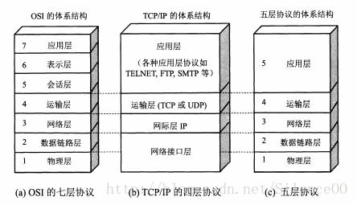

计算机网络
在浏览器地址栏输入一个URL后回车，背后会进行哪些技术步骤？
- 识别 URL 是否合法
- DNS 解析，获得域名对应的 IP 地址
- 先检查内存里的 DNS Cache
- 检查本地硬盘里的 host 文件
- 请求自己的 DNS 服务器
8.8.8.8- 将请求打包：收件人地址
8.8.8.8，寄件人地址1.1.1.1 - UDP 进行请求处理
- 将请求打包：收件人地址
- 发送 HTTP 请求，建立 TCP 连接（三次握手）
- 服务器处理请求并返回 HTTP 报文
- 浏览器解析渲染页面
- 连接结束
说说计算机网络的五层协议
- 应用层 ：为特定应用程序提供数据传输服务，例如 HTTP、DNS 等协议。数据单位为报文。
- 传输层 ：为进程提供通用数据传输服务。由于应用层协议很多，定义通用的传输层协议就可以支持不断增多的应用层协议。运输层包括两种协议：
- 传输控制协议 TCP，提供面向连接、可靠的数据传输服务，数据单位为报文段
- 用户数据报协议 UDP，提供无连接、尽最大努力的数据传输服务，数据单位为用户数据报
- TCP 主要提供完整性服务，UDP 主要提供及时性服务。
- 网络层 ：为主机提供数据传输服务。而传输层协议是为主机中的进程提供数据传输服务。网络层把传输层传递下来的报文段或者用户数据报封装成分组。
- 数据链路层 ：网络层针对的还是主机之间的数据传输服务，而主机之间可以有很多链路，链路层协议就是为同一链路的主机提供数据传输服务。数据链路层把网络层传下来的分组封装成帧。
- 物理层 ：考虑的是怎样在传输媒体上传输数据比特流，而不是指具体的传输媒体。物理层的作用是尽可能屏蔽传输媒体和通信手段的差异，使数据链路层感觉不到这些差异。
OSI
应用层再细分为：应用层 + 表示层 + 会话层
- 表示层 ：数据压缩、加密以及数据描述，这使得应用程序不必关心在各台主机中数据内部格式不同的问题
- 会话层 ：建立及管理会话
TCP/IP
它只有四层，相当于五层协议中数据链路层和物理层合并为网络接口层。
TCP/IP 体系结构不严格遵循 OSI 分层概念，应用层可能会直接使用 IP 层或者网络接口层。

数据在各层之间的传递过程是怎样的？
在向下的过程中，需要添加下层协议所需要的首部或者尾部，而在向上的过程中不断拆开首部和尾部。